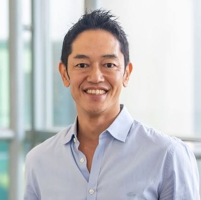

あなたの会社は
年間いくら利益を
取りこぼしていますか？
売上機会損失・業務ロス・属人化を見える化する
AI時代の経営ボトルネック診断
利益の取りこぼしを見える化
何を整理し、何に集中すべきかを提示
AI活用の優先順位を提案
※無理な営業はありません
※必要ない場合は「今は導入不要」とお伝えしています
お客様の声

★★★★★ 非常に満足
三宅裕之 様
シナジープラス株式会社 代表取締役
EYWA. PTE. LTD. CEO（Singapore）
「AIを使っているつもり」が「やるべきことが明確」に変わりました。
AIによって何ができるのかを明確にしたくて診断を受けました。診断結果をさらにAIで分析していただいたことで、課題と優先順位が整理され、成果につながる行動が明確になりました。AIの進化は速く、専門家の伴走なしでは取り残されると感じています。丁寧な対応とお人柄にも安心感があり、非常に満足しています。
★★★★★ 非常に満足
松川幸弘 様
「優秀なチームが増えたような感覚です」
「パソコンの向こう側に何人もの優秀なメンバーがいて、一緒に仕事をしているような感覚」になりました。特に、AI役員同士のチームワークには感動しています。一人で仕事をしている感覚がなくなり、頼れる経営チームができたように感じています。
★★★★★ 非常に満足
「何から手をつければいいか迷わなくなりました」
やることが多すぎて、何から始めればいいのか分からず、途中で止まってしまうことがありました。導入後は「今やるべきこと」「次のタスク」「優先順位」が明確になり、順番に進められるようになりました。緊急度まで整理してもらえるので、迷わず行動できるようになっています。
★★★★★ 非常に満足
「一人では思いつかない視点をもらえるようになりました」
営業や集客、自分の事業をどう具体化するかに悩んでいました。AI役員との壁打ちによって、自分の考えやリソースを整理でき、思考が広がりました。時間が短縮されるだけでなく、考える質そのものが変わりました。
★★★★★ 非常に満足
「自分しかできない仕事に集中できるようになりました」
これまではAIを雑務の補助程度にしか使えていませんでした。導入後は「自分にしかできない仕事」に集中できるようになりました。さまざまな視点からアドバイスをもらえるため、経営判断もしやすくなっています。
★★★★★ 非常に満足
「5人の役員が一緒に考えてくれる心強さがあります」
一人経営のため、集客や経理、施術メニューなど、すべてを一人で考えることに限界を感じていました。導入したばかりですが、率直な感想は「すごい！」です。社長の悩みや考えを伝えると、5人のAI役員が一緒に解決策を考えてくれるので、とても心強く感じています。
★★★★★ 非常に満足
「仕事が大変身して、本当に楽になりました」
導入してから、自分の仕事が大変身したと言えるくらい変わり、本当に仕事が楽になりました。今では、自分自身でもAIを使って勉強しながら、プログラムを作るなど、新しいことにもチャレンジしています。以前の自分では考えられなかった変化です。
こんなお悩みありませんか？
多くの会社は、
"間違った課題"
を解いています。
広告が悪いと思っていた。
↓
本当は、
「商品価値が整理されていない」
だけかもしれない。
SNS発信が足りないと思っていた。
↓
本当は、
「商談前の教育導線」
が弱いだけかもしれない。
AIを導入すれば解決すると思っていた。
↓
本当は、
「何をAI化すべきか」
が整理されていないだけかもしれません。
AIを使う目的は、
"AI導入そのもの"
ではありません。
本当に重要なのは、AI活用で
"利益につながる価値"を高めること
を減らし、"本当に価値を生む仕事"に集中できる状態を作ること
例えばこんな会社が多いです
私たちについて
AI組織化・システム構築担当
「会社の構造をつくる」技術者
技術と経営の橋渡しを行うテクニカルPMとして、AI・データ・システムを活用し、社長が意思決定に集中できる組織づくりをご支援しています。
【経営・マネジメント】
【AI組織構築・経営伴走】
【業務自動化システムの開発実績】
【技術者としての実績】
利益構造設計担当
「利益につながる構造をつくる」設計者
個人事業主から法人まで、小規模事業者様の売上・利益改善をご支援しています。
無料診断で行うこと
社長の頭の中と、
事業の"詰まり"を整理します。
失われている利益・工数・機会損失を可視化
利益を止めている原因を整理
どこを改善すると利益が増えるかを提示
どこからAI化すると効果が高いかを提案
明日から何をやるかを明確に
AI組織化とは、社長の右腕となる
"AI専門チーム"
を会社の中につくること。
例えば
を作って
社長の思考整理と意思決定を助ける
24時間働くAIチームを作れます。
目指すのは、
"社長が作業から解放される状態"
です。
AI導入の前に、まずは
"本当に解くべき課題"
を整理しませんか？
無料診断の流れ
無理な勧誘はありません。
まずは、今の自社にとって何を優先すべきかを整理する時間です。
よくある質問
QAIに詳しくなくても大丈夫ですか？
はい、大丈夫です。むしろ「何から始めたらいいか分からない」方に向いています。
QClaude CodeやNotionを使っていなくても大丈夫ですか？
大丈夫です。現状に合わせて、必要な場合のみご提案します。
Qその場で契約を決める必要はありますか？
ありません。まずは課題整理と方向性の確認を目的にしています。
Q個人事業主でも相談できますか？
はい。良い商品・サービスがあり、今後仕組み化したい方であればご相談いただけます。
Qどんな業種が対象ですか？
士業、教室、サロン、医療・治療院、コンサル、研修、建設、BtoBサービスなど、社長依存・属人化・導線整理に課題がある事業に向いています。
社長が毎日忙しいのは、
能力が足りないからではありません。
会社の中に、利益を生み続ける仕組みが
まだ整っていないだけです。
AI時代に必要なのは、ツールを増やすことではなく、
社長が「価値創造」と「意思決定」に集中できる環境をつくること。
もし今、
そうお考えなら、
まずは無料個別相談で
現在地を整理してみませんか？
AI組織化 × 利益改善
経営ボトルネック無料診断
※無理な営業はありません
※必要ない場合は「今は導入不要」とお伝えしています